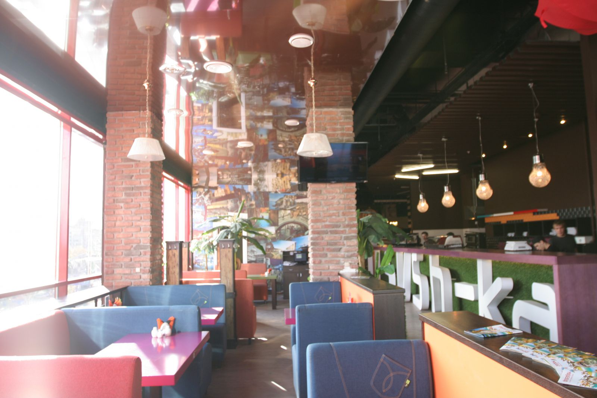
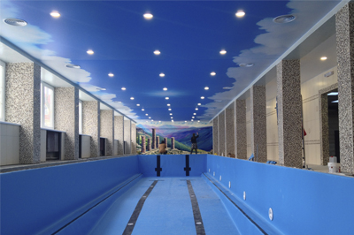

Проекты и интерьеры
Жилые комнаты, рестораны, гостиницы и общественные пространства. Посмотрите, как разные решения работают в интерьере.

Гостиная с мягким светом

Ресторан IL Sush-ka

Бассейн «Альтер Эго»

Гостиничный комплекс «Эмеральд»

Студия красоты Luck Beauty
Ничего не найдено
Попробуйте другое слово или посмотрите все материалы.
Обсудим ваше пространство
Расскажите, какой потолок вы представляете. Начнём с задачи, света и деталей интерьера.